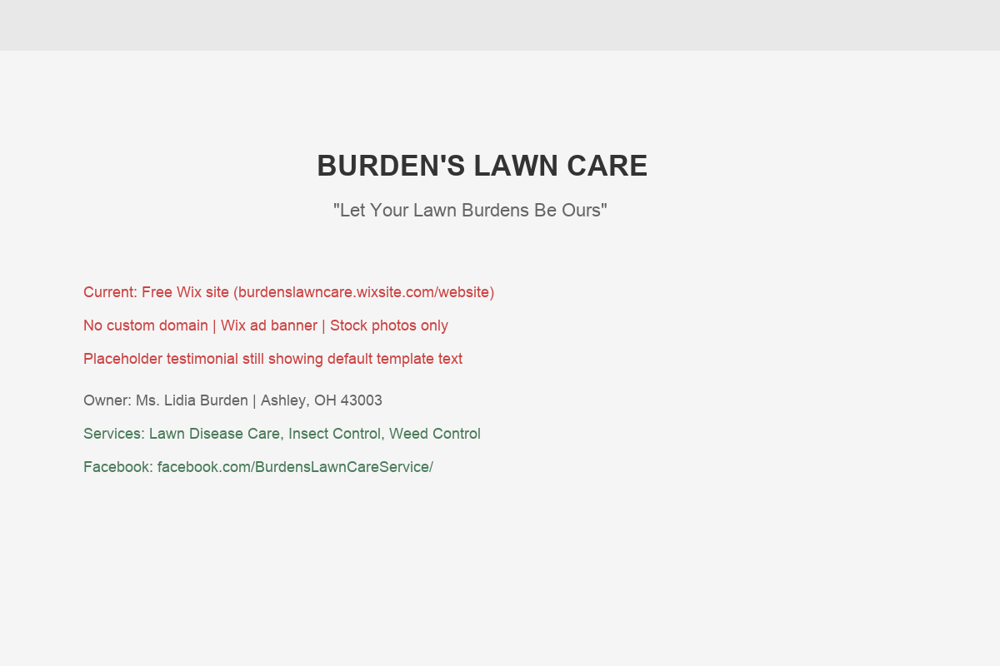

Burden's Lawn Care is a landscape care and grounds management company serving both commercial and residential properties throughout Central Ohio. Owned by Lidia Burden, the company operates from Ashley, Ohio — a small village of about 1,200 people in Delaware County, roughly 30 minutes north of Columbus.
The company offers a solid range of services: lawn disease care, insect control, and weed control — the treatment-based services that keep lawns healthy season after season. Based on the Chamber listing's description of "landscape care & grounds management services," the scope likely extends to mowing, trimming, leaf removal, and general property maintenance as well. This combination of treatment services and maintenance work positions Burden's Lawn Care as a full-service provider, not just a mow-and-go operation.
Ashley's location is strategically interesting. It sits at the northern edge of Delaware County — Ohio's fastest-growing county, which added over 16,000 residents in the last three years alone. While the explosive subdivision growth is concentrated in the southern parts of the county (Powell, Lewis Center, Liberty Township), the northern townships are experiencing their own wave of development as home prices push buyers further from Columbus. Ashley and the surrounding area offer larger lots, more rural character, and more affordable land — all of which means bigger lawns that need more professional care.
The company's tagline — "Let Your Lawn Burdens Be Ours" — is genuinely clever. It's memorable, it plays on the owner's name, and it communicates the core value proposition in seven words. That's the kind of brand asset most small businesses would pay a marketing firm thousands to develop. Burden's Lawn Care already has it. It just needs the right platform to display it.
Burden's Lawn Care offers three specialized treatment services that distinguish it from the typical mow-and-go operation:
These treatment services are higher-margin, higher-skill, and more relationship-driven than basic mowing. They're also the services that generate the most word-of-mouth referrals — when a neighbor's lawn is thick, green, and weed-free in July while everyone else's is struggling, people ask what they're doing differently.
Most small lawn care companies start residential and stay residential. The fact that Burden's Lawn Care serves both commercial and residential properties is a significant differentiator. Commercial grounds management — HOA common areas, business parks, retail properties, church grounds — provides more stable, higher-value contracts than residential mowing alone. A single commercial maintenance contract can be worth more than a dozen residential accounts.
This dual-market approach also creates a natural hedge: residential work peaks in spring and summer, while commercial contracts often extend year-round with snow removal, fall cleanup, and winter property maintenance. A website that clearly showcases both service lines would help Burden's Lawn Care attract the type of commercial clients who spend significant time researching providers online before signing annual contracts.
Operating from Ashley gives Burden's Lawn Care a natural service radius that includes some of the most underserved areas of Delaware County. While the southern part of the county (Powell, Delaware city, Lewis Center) has dozens of lawn care companies competing for business, the northern townships — Ashley, Waldo, Ostrander, Magnetic Springs, Prospect — have far fewer options. Being the local provider in a market with less competition is a powerful position — but only if potential customers can find you.
The village of Ashley itself is experiencing growth too. New homes on larger lots mean more lawn to maintain. And the homeowners moving to Ashley are often coming from smaller-lot subdivisions in Powell or Lewis Center — they're used to hiring professional lawn care, and they'll be looking for someone local.
Delaware County isn't just growing — it's the fastest-growing county in Ohio. The numbers are staggering:
Every new home built in Delaware County is a potential lawn care customer. New homeowners in these subdivisions are moving from apartments or smaller properties — many for the first time, they have a full lawn to maintain. They're actively searching for lawn care providers, and they start with Google.
For Burden's Lawn Care, this growth is a rising tide. The question isn't whether the demand exists — it's whether Burden's is positioned to capture it before competitors do. Right now, the answer is no. But it doesn't have to stay that way.

burdenslawncare.wixsite.com/website — Captured March 29, 2026
Burden's Lawn Care currently has a free Wix website at burdenslawncare.wixsite.com/website. Let's be straightforward about what this means and where the gaps are:
We want to be respectful here — having any website is better than having none. But a free Wix site with a subdomain URL creates specific problems that directly cost Burden's Lawn Care customers:
There's a common assumption that any website is better than no website. In Burden's case, the free Wix site may actually be worse than having nothing at all. Here's why:
An interesting detail: Burden's Lawn Care has two different phone numbers listed across its online profiles. The Chamber listing shows (740) 417-3252, while the Wix website shows (740) 815-1896. For a homeowner trying to make contact, this creates confusion — which number is current? Which one will get answered? A professional website would consolidate contact information into one clear, authoritative source with a single primary number, eliminating this friction.
Similarly, the email address (BurdensLawnCare@gmail.com) works but doesn't match a professional domain. When a commercial client sends an RFP to "BurdensLawnCare@gmail.com," it lands differently than "lidia@burdenslawncare.com." These small details compound to shape how prospects perceive the business before they ever see the work.
Burden's Lawn Care has a Facebook page — facebook.com/BurdensLawnCareService/ — which is a genuine asset. Facebook is still where small-town communities connect, share recommendations, and discover local businesses. The page provides a social presence that many competitors lack. But without a website to link to, Facebook activity is a closed loop — followers can like and comment, but there's no easy path from "interested" to "customer." A website with a quote form completes that conversion path.
The Facebook page also provides an opportunity for user-generated content. Encouraging customers to post photos of their Burden's-maintained lawns, share seasonal tips, and leave recommendations creates organic social proof that extends reach beyond Burden's existing network. Combined with a professional website, this social activity feeds search rankings and builds the kind of authentic online reputation that paid advertising can't replicate.
The lawn care market in Delaware County is competitive, but the competitive landscape looks very different in northern Delaware County (Ashley, Waldo area) versus the southern corridor (Powell, Lewis Center). Here's where Burden's stands:
Hoffman's Lawn & Fertilization is the gold standard for lawn care websites in the Delaware County market. Their site at hoffmanslawncare.com is professionally designed, has dedicated pages for every service (fertilization, weed control, mosquito control, perimeter pest control, aeration, overseeding), includes a service area map, and even has location-specific landing pages targeting Ashley, OH specifically.
That last point deserves emphasis: Hoffman's has a page specifically optimized for "Ashley, Ohio lawn care" that describes the village, lists their services available there, and targets homeowners in that exact location. This means when an Ashley homeowner searches for lawn care, Hoffman's — a company based elsewhere — shows up as if they're the local provider. Meanwhile, Burden's Lawn Care, which is actually located in Ashley, is nowhere to be found in that search.
Here's something Hoffman's can't replicate: Burden's Lawn Care is actually in Ashley. When an Ashley homeowner searches for lawn care and finds two options — a company based in Ashley and a company that serves Ashley from somewhere else — the local provider wins, all else being equal. People prefer to hire locally. They like knowing their lawn care provider is a neighbor, not a company dispatching crews from 30 minutes away.
This local advantage extends to practical considerations too. A locally-based provider can respond faster to service calls, is more available for add-on work, and has lower travel costs — which can translate into competitive pricing. Burden's can offer the same quality as a larger operation while being more accessible and more invested in the community.
But "all else being equal" is the key phrase. Right now, all else is not equal. Hoffman's has a 4.7-star Google rating, a professional website with location-specific content, and detailed service descriptions. Burden's has a free Wix site with stock photos. The digital gap erases the local advantage. Fix the digital gap, and the local advantage becomes the winning factor.
Lawn care is one of the most searched-for local services in any market. Homeowners search seasonally, urgently, and specifically. Here's what matters for Burden's:
Lawn care searches follow a predictable annual cycle:
The critical insight: the homeowners who will become next season's customers are starting their search right now. Having a professional website live before spring means capturing those early planners when they're comparing options.
"Lawn care near me" is one of the highest-volume local service searches in any market. Google serves these results based on proximity, Google Business Profile completeness, and reviews. Without a Google Business Profile, Burden's is invisible to every "near me" search — even from homeowners a mile away on Ashley Road.
How homeowners find and choose lawn care providers is changing rapidly. Here's what's coming:
Google has expanded Local Service Ads (LSAs) into lawn care and landscaping. These ads appear at the very top of search results — above regular ads and organic listings — with a "Google Guaranteed" badge. To qualify, businesses need a Google Business Profile, proper licensing, insurance verification, and background checks. The companies that get LSAs first in a market dominate the top position. In the Ashley/northern Delaware County area, this is wide-open territory.
When a homeowner asks ChatGPT, Google's AI, or Siri "Who does lawn care in Ashley, Ohio?", the answer is assembled from structured web data. Without a website containing LocalBusiness schema, service descriptions, and location data, Burden's won't be included in any AI-generated recommendation. Companies with structured websites and Google Business Profiles are the ones AI tools can "see."
Online reviews have become the single most influential factor in choosing service providers. A 2024 BrightLocal study found that 87% of consumers read online reviews for local businesses, and 73% only pay attention to reviews written in the last month. The volume and recency of reviews directly impacts which businesses appear in Google's local pack — and which ones homeowners trust enough to call.
For lawn care specifically, reviews carry outsized weight because the service is visible to neighbors. When one homeowner's lawn looks great, the neighbor asks who does their lawn care — and then Googles the name to check reviews before calling. This referral-to-review loop is the most powerful customer acquisition channel in lawn care, but it requires a Google Business Profile to function.
Over 60% of local service searches happen on mobile devices. A significant and growing percentage are voice searches: "Hey Google, find me a lawn care company near Ashley." Voice assistants pull from Google Business Profiles and websites with proper schema markup. A free Wix subdomain with stock photos and no schema is invisible to voice search — and increasingly invisible to traditional mobile search as well.
In small communities like Ashley, Nextdoor has become a primary channel for service provider recommendations. Homeowners post "Who does your lawn care?" and neighbors respond with names. When someone recommends Burden's Lawn Care, the person asking will immediately Google the name. What they find in that Google search determines whether the recommendation converts to a call.
Right now, a Nextdoor recommendation for Burden's leads to a dead end: a free Wix site and no Google reviews. With a professional website and even 10 Google reviews, that same recommendation becomes a closed sale — the homeowner sees the website, reads the reviews, and calls to schedule service. The recommendation pipeline already exists. It just needs a digital landing point that validates the referral.
Burden's Lawn Care needs a complete digital rebuild — not a patch on the existing Wix site. Here's the plan:
Replace the free Wix site with a clean, professional website on burdenslawncare.com (or similar). Real photos of Burden's work, detailed service pages for each offering, a dedicated commercial services section, location pages for Ashley, Waldo, and surrounding areas, and a quote request form. Mobile-first design that loads fast and looks great on every device.
Claim and fully optimize a Google Business Profile. Correct categories (Lawn Care Service, Landscaper), complete service area, professional photos, business hours, and a detailed description. This single step puts Burden's on Google Maps and in the local pack for every "near me" search in the Ashley area — an audience currently going entirely to competitors.
Set up a simple, repeatable process for collecting Google reviews from happy customers. A text or email after each service with a direct link to leave a review. Target: 10+ reviews in the first 3 months. In a market where the local competition has zero or few reviews, even a handful of 5-star reviews creates an enormous competitive advantage.
Create a simple content calendar: spring prep tips, summer lawn care guides, fall aeration reminders, winter planning. Each piece of content targets seasonal search terms, builds SEO authority, and gives Burden's something to share on Facebook. Positions Lidia as the local lawn care expert — the person Ashley homeowners trust.
Implement a simple online quote request form that captures property address, service needs, and contact info. Optionally add an online booking calendar for recurring mowing services. This converts website visitors into customers 24/7 — including evenings and weekends when homeowners are researching but can't make a phone call.
The difference between burdenslawncare.wixsite.com/website and burdenslawncare.com isn't just cosmetic — it's the difference between a hobby and a business in the eyes of both Google and customers:
We know lawn care professionals are busy from dawn to dusk during the season. Our process is designed to work around your schedule:
Total time commitment: under 2 hours across the entire project.
A website is the foundation. Here's the full ecosystem that would make Burden's the go-to lawn care provider in northern Delaware County:
The single most impactful change. A fully optimized GBP puts Burden's on Google Maps and in the local pack for "lawn care near me" searches throughout Ashley, Waldo, Ostrander, and surrounding areas. Weekly Google Posts with seasonal tips keep the profile active and ranking higher.
Systematic collection of Google reviews from satisfied customers. After each service, send a simple text with a direct review link. Even 10-15 reviews with a 4.8+ average creates powerful social proof. In northern Delaware County, where competitors have few reviews, this is a dominant advantage.
Nothing sells lawn care like visual transformation. A gallery of real before-and-after photos — overgrown lawns restored, weed-infested properties treated, commercial grounds maintained — tells the story better than any written description. Updated seasonally with new work.
Burden's already has a Facebook page — it just needs consistent content. Weekly posts of completed work, seasonal reminders, and customer spotlights. Facebook is where Ashley-area homeowners spend their time. A linked website gives every Facebook post somewhere to send interested visitors for booking.
A dedicated "Commercial Services" page with grounds management capabilities, references, and a commercial quote form. Share this page directly with property managers, HOA boards, and commercial property owners in the Delaware County area. Professional digital presence is table stakes for commercial contracts.
Build a simple email list from quote requests and existing customers. Send three emails per year: spring kickoff reminder, midsummer lawn care tips, and fall service promotion. Low effort, high return — keeps Burden's top-of-mind and drives seasonal renewals and referrals.
Lawn care is a recurring revenue business. Every new customer has the potential to become a year-round, multi-year relationship. Here's what a professional digital presence could mean for Burden's:
Lawn care is one of the best business models in home services because of its inherent recurrence. A homeowner who signs up for weekly mowing typically stays for years. Add treatment services (fertilization, weed control, insect control) and the annual value per customer rises significantly. A single residential customer can be worth $2,000-$4,000+ per year when combining mowing with treatment programs.
Commercial accounts are even more valuable. A single HOA or commercial property management contract can be worth $6,000-$25,000+ annually depending on the scope. And commercial clients tend to be even stickier than residential — switching grounds management providers is disruptive, so once you're in, you tend to stay.
With a professional website and Google Business Profile, Burden's could conservatively expect to acquire 15-25 new residential customers and 2-3 commercial accounts in the first year of having a proper digital presence. In a market as underserved as northern Delaware County, these numbers are achievable with minimal paid advertising.
Lawn care has a built-in referral mechanism that no other home service can match: your work is visible to every neighbor, every day. When one house on a street has a perfectly manicured lawn, the neighbors notice. They ask who does it. They Google the name. If they find a professional website with great reviews, they call. If they find a free Wix site with stock photos and a placeholder testimonial, they keep looking.
This "neighbor effect" creates a compound growth dynamic: each new customer is a billboard for Burden's Lawn Care, visible to 10-20 neighboring properties. With a professional website and growing review count, each of those neighbors who Googles the company name becomes a potential conversion instead of a dead end.
Northern Delaware County's growth isn't just residential. New churches, medical offices, retail centers, and institutional properties are being built to serve the growing population. Each of these properties needs ongoing grounds management — mowing, trimming, seasonal cleanup, snow removal, and landscape maintenance.
Commercial clients often research providers online more thoroughly than residential clients, because the decision involves budgets, contracts, and sometimes board approval. A property manager presenting grounds maintenance bids to an HOA board needs to show the board something — a website with services, photos, references, and pricing information. Without a website, Burden's can't even be in the conversation for these higher-value contracts.
The Chamber membership is a strategic asset here. Delaware Area Chamber events, mixers, and the online directory are all places where commercial property managers look for vendors. But when they find Burden's in the Chamber directory and click through to a free Wix site with stock photos, the connection is lost. A professional website would convert that Chamber exposure into real commercial leads.
Aspire Digital works with local service businesses that are great at what they do but haven't had the time to build the digital presence they deserve. Burden's Lawn Care is exactly this: a company with the services, the service area, and even the tagline to compete — just missing the digital platform to tie it all together.
We've built websites for trades businesses, home service companies, and local professionals across Central Ohio. We understand that a lawn care website isn't about being flashy — it's about building trust. Real photos. Clear services. Easy to get a quote. Reviews front and center. That's what converts a website visitor into a phone call.
What we'd do for Burden's is straightforward: replace the free Wix site with a professional website on a custom domain, set up a Google Business Profile, implement a review collection system, and create the seasonal content that drives search rankings. No gimmicks. No complicated marketing funnels. Just the foundational digital infrastructure that every successful lawn care company has — and that Burden's deserves.
"Let Your Lawn Burdens Be Ours" is a genuinely great tagline. It's the kind of brand asset that makes marketing easier — memorable, clever, and immediately communicates the value. Now imagine that tagline on a website that shows up first when an Ashley homeowner Googles "lawn care near me." That's the goal.
A few things about how we work with lawn care companies specifically:
No pressure, no corporate pitch — just a conversation about replacing the Wix site with something that actually works for your business.
Book a Free Strategy Callor email Chris directly
The lawn care industry in Central Ohio is seasonal but predictable — and the companies that invest in their digital presence during the quieter months are the ones that dominate when spring arrives and search demand explodes. Burden's Lawn Care has every ingredient for success: specialized treatment services, a dual commercial/residential model, a memorable brand tagline, and a location advantage in northern Delaware County's growth corridor. The missing piece is a digital platform worthy of the business behind it.
Ashley, Ohio may be small — but the homeowners there expect the same quality of service and professionalism they'd find anywhere in Delaware County. A Burden's Lawn Care website that reflects that professionalism doesn't just attract new customers — it tells existing customers that their choice was the right one.